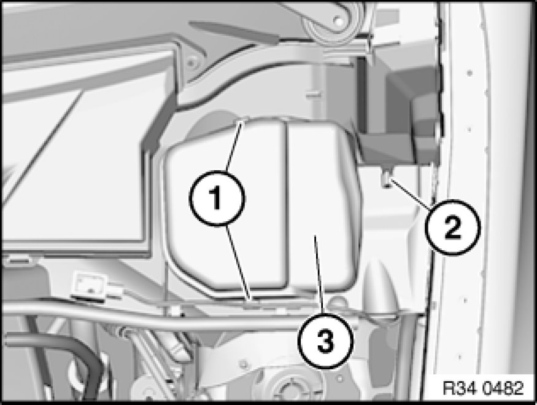
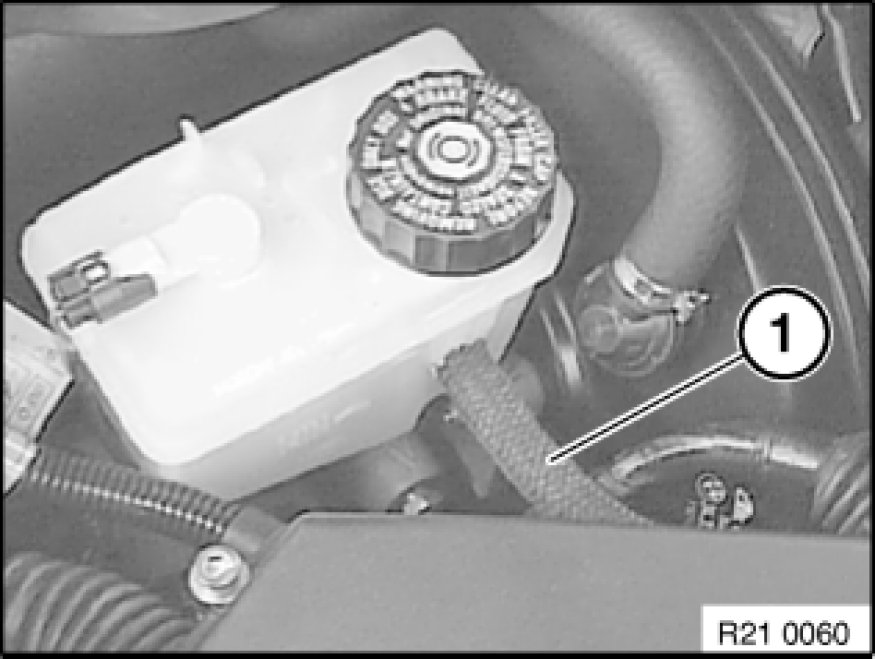
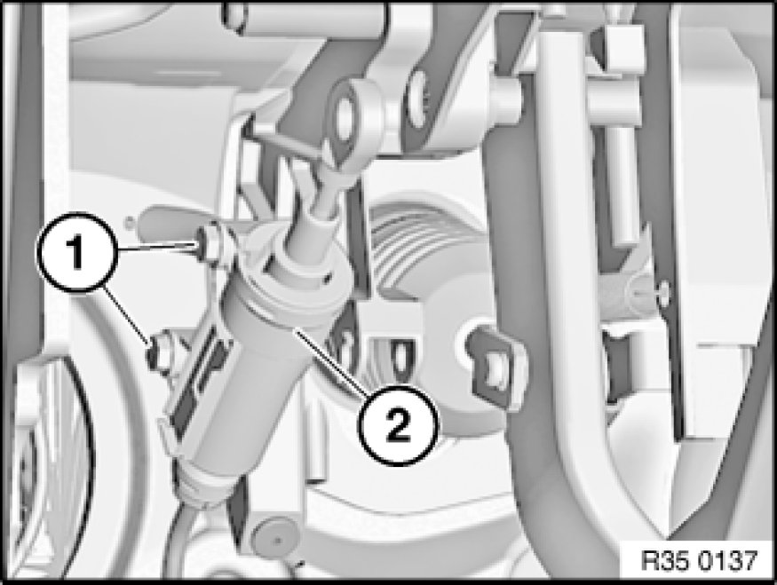
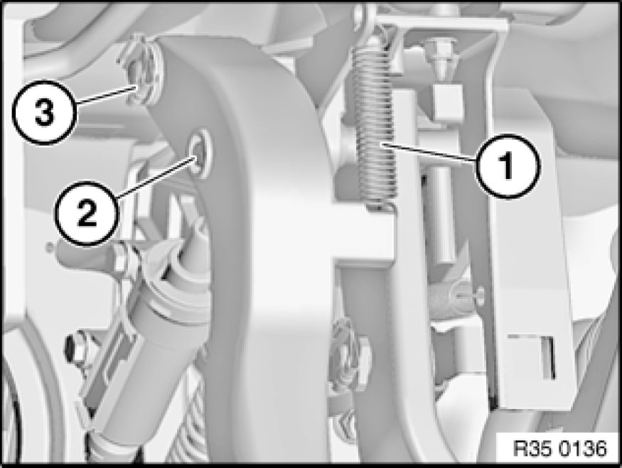
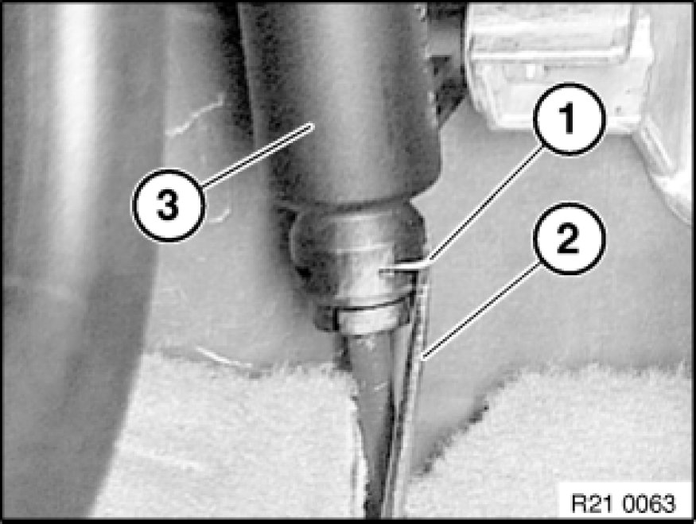
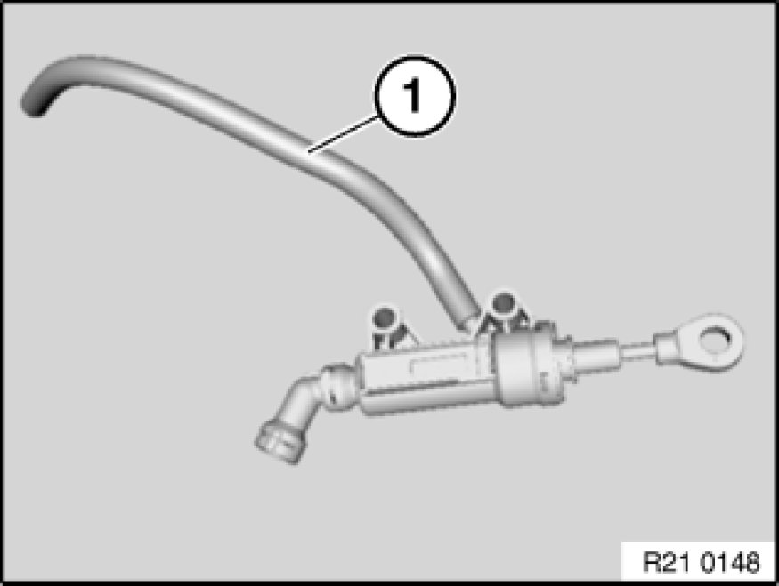
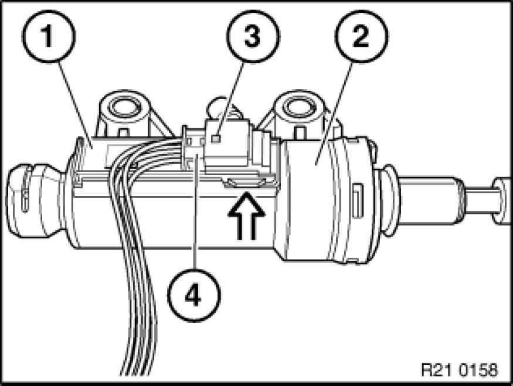
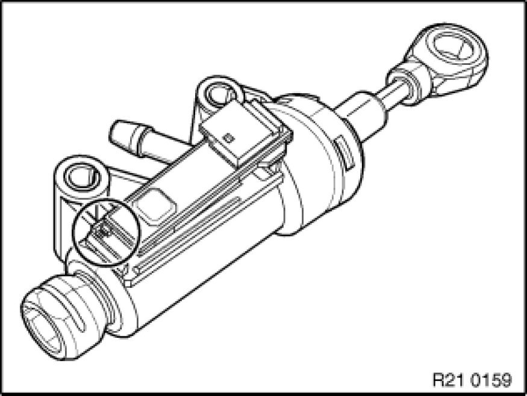

Clutch Master Cylinder: Service and Repair
21 52 500 - Removing and installing/replacing clutch master cylinder

Note:
After completing work, bleed clutch hydraulic system Service and Repair.

Necessary preliminary tasks:
- Remove trim panel 51 45 185 Removing and Installing/Replacing Panel For Pedals for pedal assembly.

Unclip retaining tabs (1).
Pull cover (3) out of guide (2) and remove.

Draw off brake fluid up to supply hose of clutch hydraulic system (1). For this purpose, use only a vacuum pipe that is exclusively used for removing brake fluid.
Detach supply hose (1) from expansion tank.

Release screws (1) on cylinder (2).
Tightening torque: 21 52 4AZ Specifications

Disconnect return spring (1).
Detach locking clip (3) and pull clutch pedal with clutch master cylinder off bearing block.
Press pin ends (2) together and remove pin.
Installation Note:
Replace locking clip.
The locking clip must be seated with both legs in the pin groove.

Detach retainer (1) with a screwdriver (2).
Note:
Do not foul carpet with brake fluid.
Detach hydraulic line from clutch master cylinder.

Detach supply hose (1) from clutch master cylinder.
Important!
Do not pull supply hose completely into interior.

Lever out shift element (1) from clutch master cylinder (2) with screwdriver.
Release plug connection (3) and disconnect plug (4) from shift element (1).

Installation Note:
Shift element is secured against incorrect installation.
Shift element must snap audibly into place.